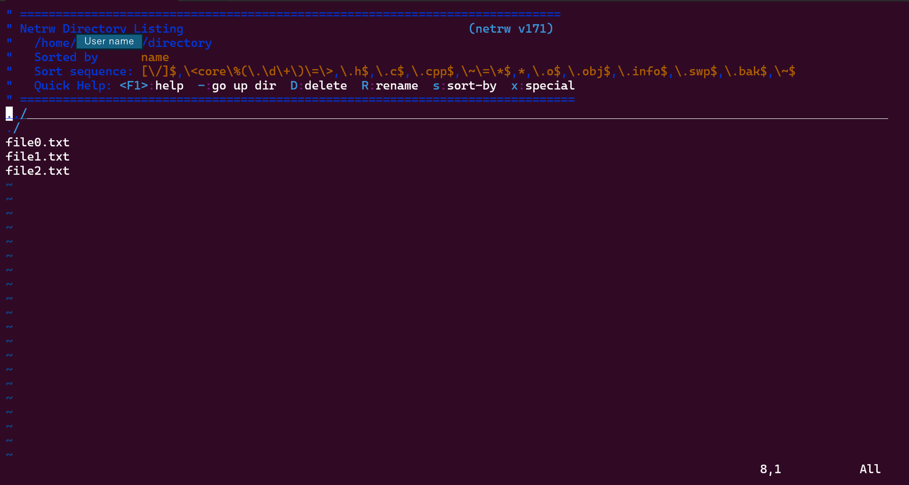

unix系osの一種(unix:現存する中で最古のos)
多くのハードウェアで使われている。(raspiからスーパーコンピューターまで)
フリーかつオープンソースなのでosの元となっていることもある(ドローン操縦用のos、raspi os ...)
CUI,CLIでの操作が主なので難易度が多少高い。
フリーかつオープンソースなので導入が楽
環境が統一しやすい。
コマンドのみでの操作ができるのでサーバーなどの高度な操作が可能
以下のコマンドをubuntuで行ってみましょう!
sudo apt install vim
vi ディレクトリ名
ディレクトリの中身が見れると思います。
これで分かるようにディレクトリもただのファイルだとわかります。
このようにコンピューターはファイルシステムといわれるOSから独立したシステムで情報を保存しています。
OSは効率的に情報を記憶するために仮想メモリという仕組みを使っています
図のように仮想メモリ上では連続するデータでも実際のメモリでは連続していません
しかし、仮想メモリ上では連続しているので配列などのデータは連続しているデータの塊に見えます。
皆さんが苦しんだであろうc言語のポインタは仮想メモリのデータの場所を表します
ちなみに自作パソコンの組み立て時にメモリ４枚刺しを避けようとするのはこのことが関係しています